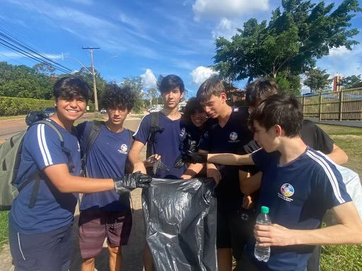
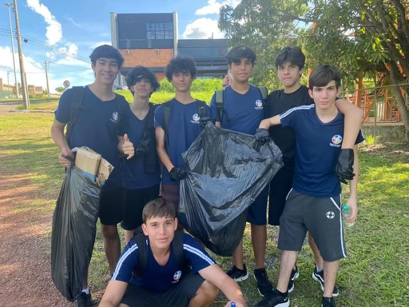
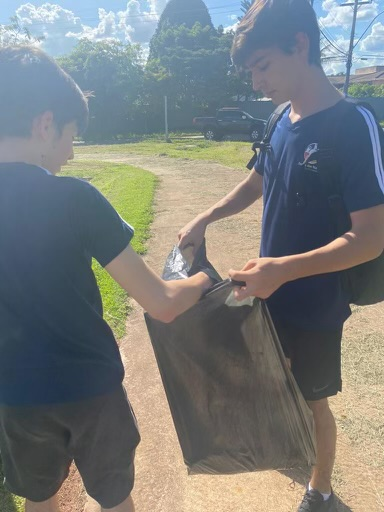
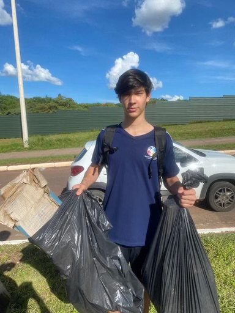
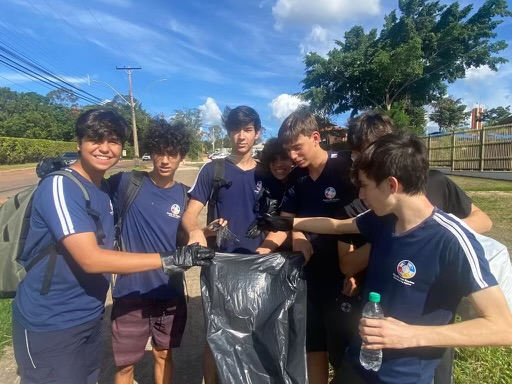
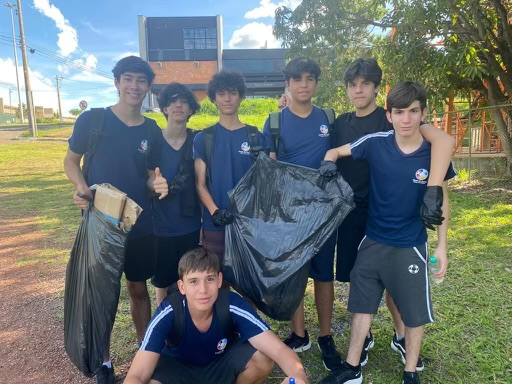
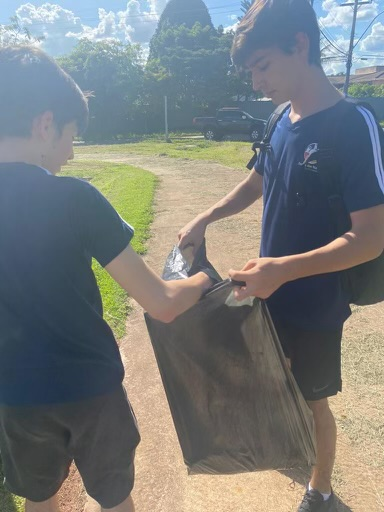
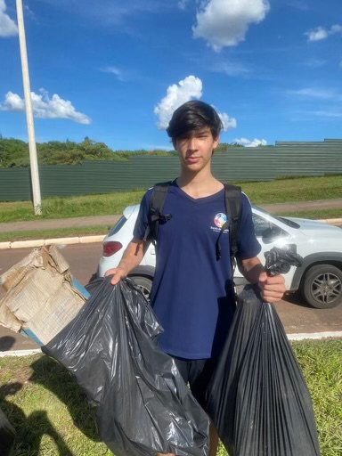

Earth Day Cleanups
 







The Climate Society recently celebrated Earth Day with a hugely successful Cleanup event, marking a significant milestone in our ongoing commitment to environmental stewardship. This event brought together a diverse group of community members, all eager to make a positive impact on our local environment.
The Cleanup drive itself saw enthusiastic participation, with volunteers working diligently to collect litter and segregate waste for recycling. It was heartening to see individuals of all ages coming together, demonstrating that environmental care is a shared responsibility.
Local School Park Cleanups
The Climate Society recently organized a heartening cleanup event at a local school park, bringing together students, teachers, and community members in a united effort to beautify and care for our shared green space. This event was a vivid demonstration of community spirit and environmental responsibility.
Our enthusiastic volunteers rolled up their sleeves and dove into the task of cleaning the park. They worked together to pick up litter, clear debris, and ensure that the park was left in a better state than when we started. The focus was solely on cleaning and caring for the park, making it a safer and more pleasant environment for everyone, especially the students who use it daily.
The event was a wonderful opportunity for hands-on learning about the importance of keeping our public spaces clean and the impact of littering on the environment. It also served as a great way for students and community members to connect with each other and with nature.
We were thrilled to see the transformation of the park by the end of the day. The collective effort of everyone involved was not only a contribution to the immediate cleanliness of the park but also a step towards fostering a culture of environmental consciousness and community involvement.